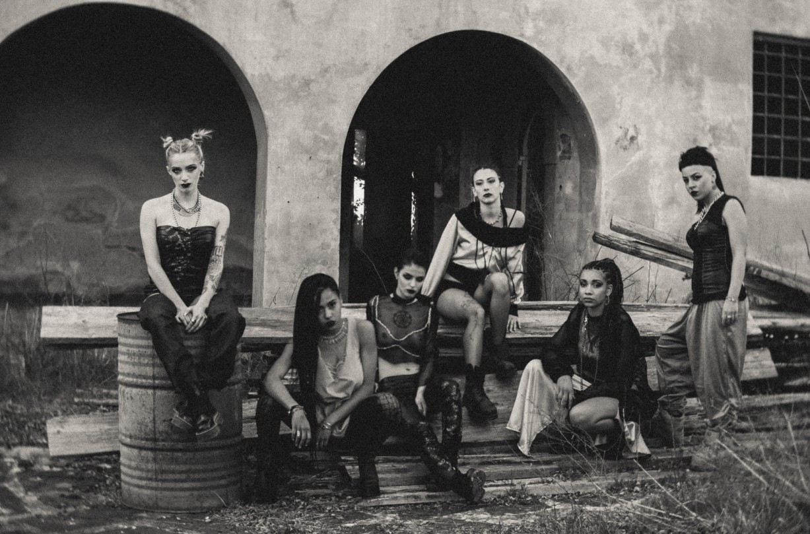

My name is Alessia Scarpelli, and I am a fashion designer and pattern maker with a deep-rooted passion for creativity, craftsmanship and self-expression.
Fashion has been part of my life for as long as I can remember. Even as a child, I was already trying to make my own clothes. What began as a personal passion gradually became my profession, and after more than 15 years in the industry, I still find the same excitement and inspiration in what I do. I love fashion because it allows us to express who we are and bring art into our everyday lives. To me, clothing is never superficial: it has the power to make people feel good, communicate identity and tell stories.

Throughout my career, I have explored many different areas of the fashion industry, developing a broad understanding of the entire creative and production process, from the initial concept to the finished garment.
My approach always begins with understanding the essence of a brand, a project or a person, identifying its strengths and expanding its vision through a creative and thoughtful approach. I then translate that vision into practical solutions, combining design and technical expertise with precision, research, craftsmanship and a strong commitment to sustainability.


My background in both fashion design and pattern making allows me to develop garments that are not only visually compelling but also technically feasible.
My knowledge of CLO3D further enables me to explore ideas, develop patterns and bring garments to life digitally. I enjoy finding creative solutions to challenges and guiding projects from concept to completion, bringing together imagination, ingenuity and a comprehensive understanding of garment development.


Beyond the technical and creative aspects of my work, fashion also has a deeply personal and political meaning for me.
I see it as a powerful tool for self-expression, a way to challenge conventions and create a visual identity that reflects the unique story of a brand or an individual. I believe that creativity should go hand in hand with ethical responsibility, sustainability and inclusivity.

I am a curious and sensitive person, deeply in love with art and nature, and passionate about protecting animals and the environment.
Through my work, I hope to contribute to a fashion industry where freedom of expression meets ethical and sustainable practices, and where creativity becomes a force for positive change. My goal is to help make fashion a more inclusive, thoughtful and imaginative space, one that celebrates individuality while respecting the world we live in.

Meet Stacy: A Manifesto of Identity and Craftsmanship
https://stacywear.it/Stacy Wear is an emotional project inspired by the rebellious spirit of the late ’70s punk movement and the raw energy of the late ’80s and early ’90s rave culture. Alessia reinterprets these influences with a contemporary twist, creating designs that speak to individuality and self-expression.
Her unique vision quickly resonated with her audience, who see her pieces as more than just clothing. Her designs are a form of self-expression —symbols of identity and belonging. The brand embraces the marginal, elevating it and redefining beauty by blurring the lines of what is considered “different” or distant from us.
